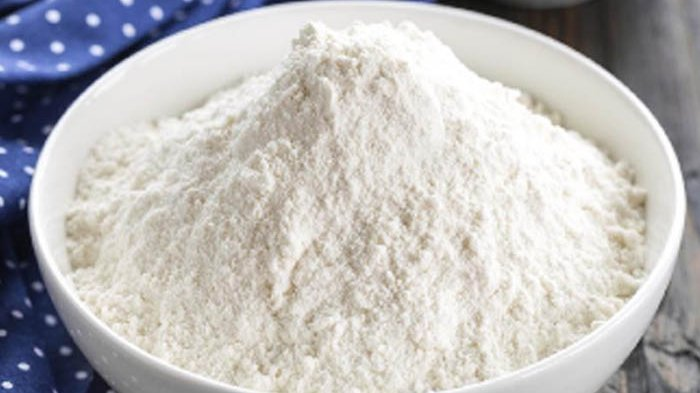
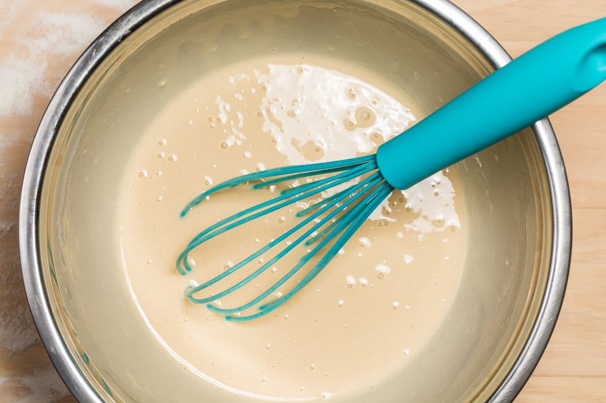
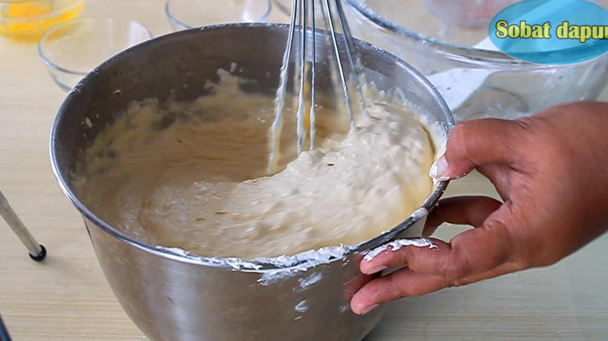
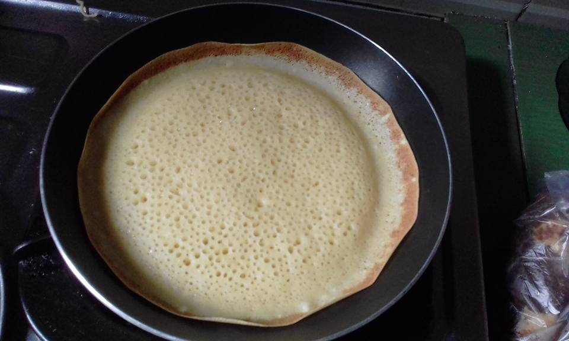
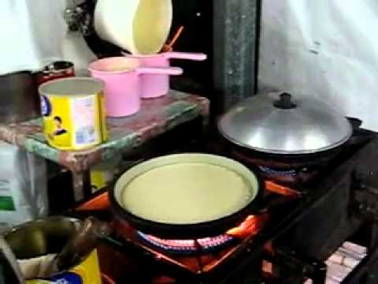
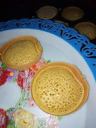
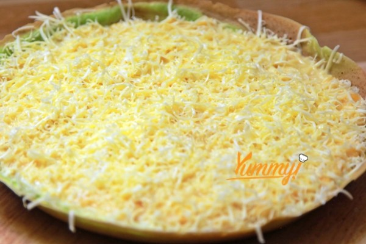

Langkah pertama, campurkan tepung terigu yang sudah diayak dengan baking powder,
25 gr gula pasir dan garam kemudian aduk sampai rata campurannya.

Setelah tercampur rata, masukkan air perlahan sedikit demi sedikit sambil diaduk
setengah dikocok selama kurang lebih sekitar 10 menit sampai semua bahan tercampur rata dan tidak ada terigu yang menggumpal.

Setelah itu, diamkan sementara adonan selama kurang lebih sekitar 30 menit dengan ditutupi serbet dibagian atasnya.
Setelah sudah 30 menit buka serbet dan aduk kembali adonan tadi.
Masukan kocokan telur, 25 gram gula pasir, margarin leleh dan juga soda kue, aduk kembali sampai semua rata.

Tuangkan adonan dalam cetakan anti lengket yang telah dipanaskan dan diberikan margarin masak sampai adonan martabak
berserat dan berlubang bagian dalamnya.

Tutuplah sampai martabak matang dan oleskan margarin.

Tunggu sampai matang dan angkatlah.

Lalu berikan taburan keju dan susu kental manis dibagian atasnya.

Potong terang bulan menjadi beberapa bagian sesuai selera.